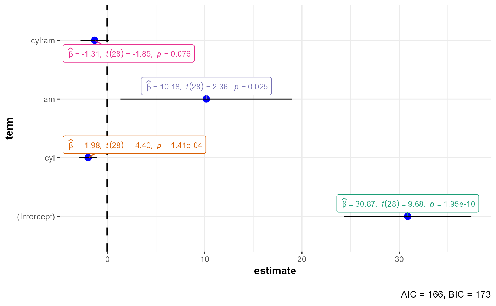

Dot-and-whisker plots for regression analyses
ggcoefstats( x, output = "plot", statistic = NULL, conf.int = TRUE, conf.level = 0.95, k = 2L, exclude.intercept = FALSE, effsize = "eta", meta.analytic.effect = FALSE, meta.type = "parametric", bf.message = TRUE, sort = "none", xlab = "regression coefficient", ylab = "term", title = NULL, subtitle = NULL, caption = NULL, only.significant = FALSE, point.args = list(size = 3, color = "blue"), errorbar.args = list(height = 0), vline = TRUE, vline.args = list(size = 1, linetype = "dashed"), stats.labels = TRUE, stats.label.color = NULL, stats.label.args = list(size = 3, direction = "y"), package = "RColorBrewer", palette = "Dark2", ggtheme = ggplot2::theme_bw(), ggstatsplot.layer = TRUE, ... )
Arguments
| x | A model object to be tidied, or a tidy data frame containing results
from a regression model. Function internally uses
|
|---|---|
| output | Character describing the expected output from this function:
|
| statistic | Which statistic is to be displayed (either |
| conf.int | Logical. Decides whether to display confidence intervals as
error bars (Default: |
| conf.level | Numeric deciding level of confidence or credible intervals
(Default: |
| k | Number of digits after decimal point (should be an integer)
(Default: |
| exclude.intercept | Logical that decides whether the intercept should be
excluded from the plot (Default: |
| effsize | Character describing the effect size to be displayed: |
| meta.analytic.effect | Logical that decides whether subtitle for
meta-analysis via linear (mixed-effects) models (default: |
| meta.type | Type of statistics used to carry out random-effects
meta-analysis. If |
| bf.message | Logical that decides whether results from running a
Bayesian meta-analysis assuming that the effect size d varies across
studies with standard deviation t (i.e., a random-effects analysis)
should be displayed in caption. Defaults to |
| sort | If |
| xlab, ylab | Labels for |
| title | The text for the plot title. |
| subtitle | The text for the plot subtitle. The input to this argument
will be ignored if |
| caption | Text to display as caption. This argument is relevant only
when |
| only.significant | If |
| point.args | Additional arguments that will be passed to
|
| errorbar.args | Additional arguments that will be passed to
|
| vline | Decides whether to display a vertical line (Default: |
| vline.args | Additional arguments that will be passed to
|
| stats.labels | Logical. Decides whether the statistic and p-values for
each coefficient are to be attached to each dot as a text label using
|
| stats.label.color | Color for the labels. If set to |
| stats.label.args | Additional arguments that will be passed to
|
| package | Name of the package from which the given palette is to
be extracted. The available palettes and packages can be checked by running
|
| palette | Name of the package from which the given palette is to
be extracted. The available palettes and packages can be checked by running
|
| ggtheme | A function, |
| ggstatsplot.layer | Logical that decides whether |
| ... | Additional arguments to tidying method. For more, see
|
Value
Plot with the regression coefficients' point estimates as dots with confidence interval whiskers and other statistical details included as labels.
Note
All rows of regression estimates where either of the following quantities is
NAwill be removed if labels are requested:estimate,statistic,p.value.Given the rapid pace at which new methods are added to these packages, it is recommended that you install the GitHub versions of
parametersandperformancein order to make most of this function.
References
https://indrajeetpatil.github.io/ggstatsplot/articles/web_only/ggcoefstats.html
Examples
# \donttest{ # for reproducibility set.seed(123) # -------------- with model object -------------------------------------- # model object mod <- lm(formula = mpg ~ cyl * am, data = mtcars) # to get a plot ggstatsplot::ggcoefstats(x = mod, output = "plot")# to get a tidy dataframe ggstatsplot::ggcoefstats(x = mod, output = "tidy")#> # A tibble: 4 x 9 #> term estimate std.error conf.low conf.high statistic df.error p.value #> <fct> <dbl> <dbl> <dbl> <dbl> <dbl> <int> <dbl> #> 1 (Intercept) 30.9 3.19 24.3 37.4 9.68 28 1.95e-10 #> 2 cyl -1.98 0.449 -2.89 -1.06 -4.40 28 1.41e- 4 #> 3 am 10.2 4.30 1.36 19.0 2.36 28 2.53e- 2 #> 4 cyl:am -1.31 0.707 -2.75 0.143 -1.85 28 7.55e- 2 #> label #> <chr> #> 1 list(~widehat(italic(beta))==30.87, ~italic(t)(28)==9.68, ~italic(p)=='1.95e-~ #> 2 list(~widehat(italic(beta))==-1.98, ~italic(t)(28)==-4.40, ~italic(p)=='1.41e~ #> 3 list(~widehat(italic(beta))==10.18, ~italic(t)(28)==2.36, ~italic(p)=='0.025') #> 4 list(~widehat(italic(beta))==-1.31, ~italic(t)(28)==-1.85, ~italic(p)=='0.076~# to get a glance summary ggstatsplot::ggcoefstats(x = mod, output = "glance")#> # A tibble: 1 x 6 #> aic bic r2 r2.adjusted rmse sigma #> <dbl> <dbl> <dbl> <dbl> <dbl> <dbl> #> 1 166. 173. 0.785 0.762 2.75 2.94# -------------- with custom dataframe ----------------------------------- # creating a dataframe df <- structure( list( term = structure( c(3L, 4L, 1L, 2L, 5L), .Label = c( "Africa", "Americas", "Asia", "Europe", "Oceania" ), class = "factor" ), estimate = c( 0.382047603321706, 0.780783111514665, 0.425607573765058, 0.558365541235078, 0.956473848429961 ), std.error = c( 0.0465576338644502, 0.0330218199731529, 0.0362834986178494, 0.0480571500648261, 0.062215818388157 ), statistic = c( 8.20590677855356, 23.6444603038067, 11.7300588415607, 11.6187818146078, 15.3734833553524 ), conf.low = c( 0.290515146096969, 0.715841986960399, 0.354354575031406, 0.46379116008131, 0.827446138277154 ), conf.high = c( 0.473580060546444, 0.845724236068931, 0.496860572498711, 0.652939922388847, 1.08550155858277 ), p.value = c( 3.28679518728519e-15, 4.04778497135963e-75, 7.59757330804449e-29, 5.45155840151592e-26, 2.99171217913312e-13 ), df.error = c( 394L, 358L, 622L, 298L, 22L ) ), row.names = c(NA, -5L), class = c( "tbl_df", "tbl", "data.frame" ) ) # plotting the dataframe ggstatsplot::ggcoefstats( x = df, statistic = "t", meta.analytic.effect = TRUE, k = 3 )#> Warning: There were 3 divergent transitions after warmup. See #> http://mc-stan.org/misc/warnings.html#divergent-transitions-after-warmup #> to find out why this is a problem and how to eliminate them.#> Warning: Examine the pairs() plot to diagnose sampling problems#> Warning: Could not get model data.# }